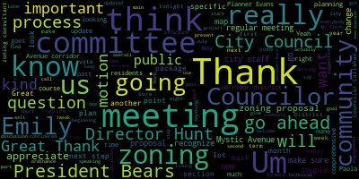
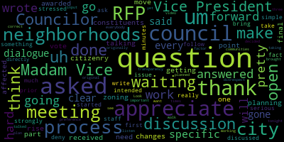
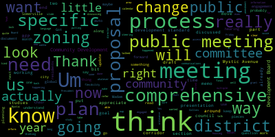
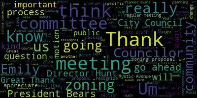
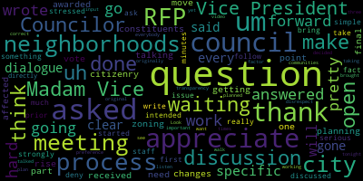
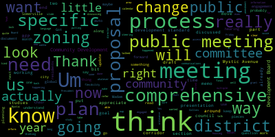

total time: 20.01 minutes
total words: 3138

{kind=link}
total time: 2.71 minutes
total words: 479

{kind=link}
total time: 10.74 minutes
total words: 1747

{kind=link}
total time: 1.27 minutes
total words: 195

total time: 1.46 minutes
total words: 213

[Hunt]: I was at the Chamber of Commerce event this morning, so I talked about this. We may get some Chamber members watching.
[Collins]: All right, we're going to get started in just a second. Welcome, everybody.
[Hurtubise]: Vice President, give me a quick second. I just got to grab a couple of attendance slips. I'll be right back.
[Collins]: Thanks for bearing with us, everybody. I believe President Behrs will be joining us in just a minute, so we can give it another couple of moments for folks to get situated. Mr. Clerk, please just let me know whenever you're ready.
[Hurtubise]: All set.
[Collins]: Thank you. All right, there will be a meeting of the Medford City Council Planning and Permitting Committee, October 23rd, 2024. This meeting will take place at 6.30 p.m. by Zoom only due to early voting in the council chambers. Mr. Clerk, please call the roll.
[Hurtubise]: President Behrs. Councilor Callahan. Hang on, I see Councilor Callahan. Councilor Lemmon. Yes. Councilor Scarpelli? Present. Vice President Collins?
[Collins]: Present. Five present, none absent. The meeting is called to order. The action discussion item for this meeting is again 24-033 zoning ordinance updates with the Innis associates team. This is an exciting moment in our journey through our zoning update. We have been meeting, of course, with our zoning consultant and associates since the beginning of this term. beginning in July with our mapping workshop, we started our targeted discussions of the Mystic Avenue corridor district, discussing that through July and August, and having more tweaks and changes to the draft proposal over the past couple months with a lot of input from city staff. We've been continuing those last changes in committee over the past couple meetings. and tonight I believe that we have a mostly finalized proposal that the zoning consultant has put together for us that councilors got a chance to look at over the weekend. And I think the intent for tonight is for us to have a final discussion of the Mystic Avenue Corridor District in this committee before it goes out to review by a procedural step at a regular meeting of the City Council. and then review by Community Development Board before it again comes back to the City Council for another hearing. So we have a short list of the specific pieces of the zoning proposal within the package that Councillors received in their agenda packets last week. That kind of break down the proposal into its constituent parts in terms of how it fits into our zoning bylaws. I'm happy to run through those, but I'm sure that our city staff from the planning department or Emily or Paola from Ennis Associates could do a more elegant job. I also want to make sure that we touch on the timeline. You know, just again, we've been doing this at every meeting, but just to again, kind of recenter ourselves and how we got here at this step in the, at this stage of our timeline, going from several years ago with these kind of goals and visions being formed through our housing production plan and comprehensive plan. Um, so I would be happy to, um, recognize, um, Director Hunt or, um, Emily. Um if either of you would like to start us off an Yeah, I know. Yeah, I'm happy to pass it off to Director Hunt or Emily after a note from Councilor Scarpelli to orient us to what we're reviewing tonight. But first, go ahead, Councilor Scarpelli.
[Scarpelli]: Thank you. I appreciate the I appreciate the hard work, but I think that one of the questions that I've been, um, that I've, I've received from the constituents is that when we wrote this RFP, we're getting to the point where, um, the question is down to a rise that is, is that we need to be answered is that when we wrote the RFP and we asked for uh, in this to be the that were awarded. We were talking about the process of going into the neighborhoods that our zoning changes would be affected so we can have our citizenry be part of that discussion. Um, are we planning on doing that before we go to a city council final vote as we move forward because that's something that was um stressed pretty pretty strongly when we discussed it with the prior city council so uh again i appreciate the hard work but i've been waiting uh to ask this question for the simple fact that it's what was intended when we first started the process so thank you thank you so much counselor i really appreciate that question um
[Collins]: I think that a couple ways to answer that. I think that there isn't a plan to have community meetings in between this meeting and when it goes to the regular meeting of the City Council. I will say that everything that this proposal is based on was really forged through robust community engagement really over the course of years between city staff planning. Pardon me, I'm speaking. That was forged through the comprehensive plan formation, which was a year's long community engagement process. I also know that there were certain parts of the Mystic Avenue Corridor District proposal that we actually pulled back on because we decided that there hadn't been enough robust community engagement when it came to including certain residential streets in that corridor. We decided we're actually not ready to pull the trigger on that without engaging those specific residents. So we've been really conscious of the community buy-in aspect throughout this process. And of course, you know, we've been really doing our due diligence over these past few months of we are doing on the mystic Avenue quarter district proposal in this committee and giving the public every opportunity to add to the community feedback that was already given over the course of years. Um on the concert him to on the sorry on the comprehensive. Planning. Process Um, so I look forward to continuing to welcome the public into these this committee is working on and that residents are really, really welcome to part of this process. But at this point, um. I think that I'm excited to get excited to hear from our city staff and our zoning consultant on exactly if I can follow up. Excuse me, sir. You can wait until I'm finished speaking. Um. I think at this point, it would be important for us to first orient and what we're looking at today. I want us to get oriented on what we're looking at today from, um.
[Scarpelli]: Councilor as a city council, I have a question and for you to deny that question for city staff is a serious issue, Madam Vice President, because I have a follow up to the question that you asked because I asked a specific question. The specific question I asked was when we asked to write the RFP and if I'll bring up the minutes, we will that we asked that we were going to take this directly to the neighborhoods and have an open discussion in those neighborhoods with open dialogue and meetings to get everybody's input. Not what you just said. Again, this council is working on the transparency factor of what you think is correct, not what we decided on as a council. So don't disrespect me. I wouldn't do that to you. You've done it three times tonight. So thank you.
[Collins]: I'm not sure what you're referring to.
[Scarpelli]: Look at the video.
[Collins]: I'm just trying to chair a meeting, George. I'm going to say it up top. This is a working meeting. We've had a lot of working meetings over the past few months. We are not going to be interrupting each other. I am the chair of this meeting. I will recognize all participants, including counselors. I will not be interrupted. We are going to go through the zoning memo. We are going to have a respectful conversation. This process was informed by community outreach. That is a fact. And if you had concerns about the specific way that we've been doing community outreach through this committee process, you could have brought that up at any time starting in July and not at the 11th hour. And I'm just going to say that at the top of the meeting. Now I'd like to recognize Director Hunt or Innis Associates to walk us through the memo.
[Scarpelli]: Madam Vice President.
[Collins]: Madam Vice President, I'm going to give you one more time and then we're going to go.
[Scarpelli]: No, I appreciate it. So I think that it's important as as make it make it to be clear that I've I've gone to listen to every meeting, gone to every meeting, and this is under the meeting preference that we're waiting on the process that was originally planned and the RFP that this will be taking to the communities. You haven't answered that question yet. We haven't talked about that. You said that we've had open dialogue that we've done this. We've done that. But again, I want to make it clear. This counselor hasn't brought this forward because I've been waiting for the process to walk through to see when is the plan and to go into the neighborhoods because that was the original discussion, Madam Vice President. That's all. So thank you.
[Collins]: Thank you, President Burris. Go ahead.
[Bears]: Thank you, Madam President, Madam Chair. Again, I think we need to talk about what the process actually was in the RFP, which discussed us having specific public meetings around specific proposals for specific neighborhoods. This is a public meeting on the Mystic App proposal. We can talk about the process that got us here. Again, robust, extensive, comprehensive planning over two years. feedback from thousands of residents, et cetera. When you read the RFP, when you read the contract that was awarded, we talked about holding public process and public meetings throughout on specific proposals for specific areas. We've had multiple meetings to generate this. We're now having a meeting on the final draft proposal coming out of committee. It goes to council for automatic referral to Community Development Board, where there'll be another public hearing on this proposal. a community meeting, whatever we want to call it. There's public meetings ahead on this proposal specific to Mystic Avenue. And that's the process. So we are having the public meetings and engaging the residents. on these proposals based on the two plus years of public engagement and community engagement that's already happened to develop the city comprehensive plan. We're now executing on literally years of community process and engagement around this issue. We've heard from residents around Mystic Avenue multiple times on proposals and on the ideas of what was in the comprehensive plan. And now we have a draft. This public meeting is occurring. There will be the meeting to refer this to the Community Development Board. The Community Development Board will have a public hearing and at every step along the way, community members will be engaged and are being engaged in that process and will have continued voice even beyond the voice that's already been part of this process to inform this plan. So I don't know specifically what the request is. If it is to have a public meeting, That's happening and has happened and will continue to happen.
[Collins]: Thank you, President Beers. We'll go now to Director Hunt. For clarity, George, you got to wait for me to recognize you. We're going now to Director Hunt. Director Hunt, go ahead.
[Hunt]: Madam chair, um, as before I introduce, um, Emily, um, in us and the proposal this evening, um, I did actually think it would be useful for me to share some of the outreach that we have been doing, um, that, uh, We sent out a mailer through all the water bills that highlighted a residential side that highlighted our new zoning page and zoning process. and a business side that specifically said it was for businesses that directed people. And I'm going to post the URL for the webpage that we've made at medfordma.org slash zoning. I also had a coffee with the chamber this morning. I had about, I didn't count, but I'm going to say 30 to 40 chamber members, including a solid number of business owners from Mystic Ave at the chamber this morning. where we presented, we talked about a lot of the work that the city is doing, but knowing that this is very important to those business owners, we actually did focus on Mystic Ave. I encourage them to watch this evening. I encourage them to reach out either publicly or privately to myself or members of the council with any thoughts or concerns or questions about this, including let them know about our process, about where there would be public hearings that they could also contribute at that point too. And I pointed them to the webpage where they could review the zoning that was circulated on Friday. I just wanted to share that there was also some direct outreach. When you see the map for Mystic Ave, there's a little area that seems oddly cut out of residences, and that is an area where residents had petitioned to be taken out of the Commercial 2 Zone about 15 years ago. And we had somebody from the mayor's office reach out to those residents as well to find out to sort of take a temperature of what was going on, but more importantly, let them know that these public meetings are occurring and that they should watch these public meetings or review the documents if they have any questions or concerns about rezoning on there. So while it hasn't been with the council in tow, if there was any meeting that involved all the city counselors, it then becomes a whole question about public meeting process, you know, posting, etc. But we have been doing these outreach sessions, as well. I also reached out to the property owner that owns the largest chunk of land on Mystic Ave and asked if they wanted to meet with me and let them know specifically about this proposal and this meeting so that they would also be aware of this. So I just wanted to share that, that we've been doing a bunch of this outreach. This is different from a block that has a ton of residents living on it, but we've been trying to reach the business owners on this. I don't want to call out any of the business owners by name without warning them, so I don't want to actually name names, but I'm happy to share with Councilor Scarpelli privately, who I spoke with this morning at the chamber. I just don't want to do that in a public session without telling them I was going to name names. So let me turn this over to Emily to provide the presentation and from her team tonight. Thank you, Director Hunt. I recognize Emily Ennis.
[Innes]: Thank you, Chair Collins. So good evening for the record Emily Ennis of Ennis Associates. I do want to walk through the primary components of the draft zoning that is in front of you just from a high level. I also want to talk about some of the changes we have made in discussion with President Mayers and Chair Collins and the city staff on our regular check-in calls prior to this meeting. Before I do that, I would like to set what we're doing today in context with the overall effort. So there has been reference to the comprehensive plans and past studies. The work that we have done with you so far in this effort has been initially starting off on some of the administrative items that needed to be cleared up post the recodification and moving towards this first tackle of an actual geography. We talked about the existing conditions for the Mystic Avenue corridor. We talked about the existing conditions for Salem Street. Started to show you some of our thinking based on past planning efforts and practice. But this is where we're starting to really focus in on, here is a geography. here is the uses and the dimensional standards and the development standards and the incentives that would go along with this geography. One of the things that we've been talking about in-house with, you know, among ourselves, Paula, Jemmy, myself, the other members of the NS Associates team, is we are understanding that at some point we're going to have to come back to you and we're going to have to say, Remember that work that we did in October? We're going to have to change some of that because now we've done other districts and there will be implications for this district for some of the components based on the work that we do later in the process over the next six to eight months. We want you to be aware of that today that, for example, some of the development standards that we're proposing for Mystic Avenue corridor may be appropriate for other geographies in the city. And we may find, for example, that it is appropriate to create a new section in your zoning ordinance called development standards, point some of the other districts that we're going to be looking at to those development standards, and then come back and modify this to point to that same section. There will be other examples like this. I do want to just note that we are starting with an area that has had significant public participation over the years, including discussion of the comprehensive plan. There are some other geographies that we are looking at that were also mentioned in the comprehensive plan. and past planning efforts. So, for example, Medford Square will be coming up to you relatively soon. But there are areas that were not as significantly discussed during the comprehensive planning process or did not have as fully developed planning processes. We know we're getting to those later in this planning process, we have set aside budget if we need to assist the city with their public outreach for those areas. So we have planned for that. We are aware that that may be needed. It's just that we're starting off with a district that we understand has already received significant public presentation, but we are aware of the need to assist the city in its communication as required. So with that, I'm going to get a quick overview of the districts and the components that we're changing. And then I'm going to walk you through verbally some of the changes that we anticipate based on the input from our regular Monday meeting after you receive this on Friday. And then if you have specific questions, I'm happy to share my screen with the actual text. So there are four sections that we are amending and then a brand new section that's going in. Some of the sections that we're amending are basically boilerplate sections or boilerplate amendments that say if you're adding a new zoning district, you have to amend these sections to include that zoning district into the ordinance as a whole. So we're amending section 94 dash 2.1 which divides your city into zoning districts and we're adding this district to that. We are amending the Table of Use Regulations. So we're taking the Table of Uses that we amended earlier this year, amending that again to add the new district, the uses for the new district into that. Same thing for the Table of Dimensional Requirements. So the Table of Use Regulations is 94-3.2. Table of Dimensional Requirements is 94-4.1. So we're amending that to add this. We are amending section 94-12.0, which is definitions. And I want to stop here and say that we anticipate amending that definition section pretty much every time you see us for a zoning change. because as we go to the different geographies, as we better understand your, not just the housing goals that you have, which we've certainly talked about, but also your goals for economic development and jobs and how those might affect different districts, we anticipate either adding or modifying definitions as we go through. So don't be surprised to see that more often. So those are the main amendments to your existing zoning ordinance and then we are inserting section 94-9 point whatever the next number is in the sequence there for the Mystic Avenue corridor district. The key things to note when we are adding these pieces is that you are getting some additional uses in your table of uses that are also defined specific to the corridor. We anticipate as we re-look at the other geographic areas that some of those uses will be appropriate and so we will be modifying the table of uses again to either include them in existing districts or to add new districts or revise districts to include the new uses that we're proposing. We also anticipate that we're going to be doing the same thing for the Table of Dimensional Requirements. We have created for the purposes of today's zoning some sub-districts of the Mystic Avenue Corridor District. So we have a mixed-use 1, a mixed-use 2, a mixed-use 3, and a commercial sub-district for all of these. We anticipate that some of those sub districts may be useful in other parts of the city. So that is a change that you may see us bringing back to you. In addition to the standard table of uses and the table of uses and the dimensional standards, we're adding a few other components to the Mystic Avenue Corridor District. So we have definitions of the the sub-districts. We have certain dimensional requirements and waivers of those requirements for the districts. So we have requirements for setbacks allowing for multi-building lots and importantly the transitions from the new district to the adjacent residential districts. Those are things to watch out for and understand that each district that we propose is likely to have some variations to allow for the appropriate transition, certainly in the quarters and squares to the adjacent residential districts. We also have a section for development incentives. You would have seen this for those of you who voted on the Section 3A MBTA Communities Act zoning last fall. We built off the development incentives in there to create the development incentives for the Mystic Avenue corridor. And you'll note that there are some new ones there. We have used the zoning to allow the Community Development Board to develop design guidelines for this district. Again, that may be something that becomes applicable to more than one. And we have placed development standards, again, based primarily on or initially on the ones that you did for the 3A district, but also looking at other sections of your existing zoning ordinance for appropriate development standards. And then finally, we are tying the affordability requirements to the existing inclusionary housing. So those are the main core components of the new zoning district. The amendments are to, we had referred to special permits in the table of uses. We have proposed to clarify those to assign them to the community development board. We are allowing J6 Research and Testing Laboratory as a yes, a permitted use in all of the sub-districts. We realized when talking with city staff that we had inadvertently gotten rid of the C2 district. We hadn't realized that that was the only place that adult use was allowed in the city. So we are allowing adult use back in the commercial sub-district, which effectively replaced the C2 district. There was some confusion in the recodification between large and small hotels and large and small business professional or government offices. We are deleting the reference to size in the table of uses. That's something that will come back for the entire table of use. And we are proposing the next time we talk with you, we will start to show you use standards, which may govern the size in certain districts. We are also changing some of the terminology around, I think we had single dwelling units and it should have been single unit dwellings. That was a typo that went through. So we're fixing those for all dwelling units. We are adding the idea of low income shared community solar under incentive zoning, but it's as a placeholder because we need a better definition, a better zoning definition of what that is and how it would work. But we want that to be available for city councillors to discuss. So we've added it to the table. And I've already mentioned that we're going to add the additional use standards as we move through through the other districts. So those are the primary changes to the document that you saw on Friday. Again, I'm happy to go through and talk about anything specific. We at this point would love to hear with the chair's permission, any questions from city councilors on the language so that we're able to work with city staff to make those changes prior to moving on to the next step. And with that chair Collins, I will defer back to you.
[Collins]: Thank you so much, Emily. I appreciate that. Thank you for the overview. I know that this was a pretty substantial package that counselors received before the weekend. I know I've given it my review, clarified some things in the text. I'd like to ask my fellow counselors if there's any questions on this section that they want clarification on before we move on. Go ahead, President Burris.
[Bears]: Thank you, Madam Chair. I was just wondering, Paula, in the memo, you noted that we need a little more study on like what the community solar incentive would be. Are we thinking that that would be something that the research could be done like, well, this is being also at the public meetings for the Community Development Board and could maybe be included as a recommendation from the CD board or at the final council hearing on this? Or do we need more time than that?
[Martinez]: Hi, President Bairstow. Go ahead, Paola. Yes, I think that it might need a bit more time. There is a lot of information and a lot of programs at a federal level and a state level. So I want to go a bit through those. Also, we will need to see how that works in making the standards for it. So I consider that we will need a bit more time and more research. But we do want to look into it. We do think it's interesting. So it might be something that we will have to bring back. I don't know. Emily, do you have any consideration? Do you think that it will be able to do it before the public hearing?
[Innes]: With your permission, Chair Collins? Go ahead, Emily. Yes, I think, so one of the questions is what is the appropriate zoning definition? Paola mentioned the standards that would go along with it. I think the third question that we would want to answer is what level of benefit would it be, you know, is it worth, the incentive structure is based on number of floors at the moment, So is it a half floor, a whole floor? We need to do some thinking about that as well to see what that structure would be. If we cannot complete that by the time that we go to the CD board, I would anticipate bringing it forward as a modification with the Salem Street corridor zoning, which is the next one on our list. So I don't anticipate that it's going to be too long a period. But just to give you a timeline in case we can't meet it to the CD board for this zoning.
[Bears]: Got it. Thank you.
[Collins]: Great. Thank you for the question, President Behrs. Thank you for weighing in on that, Emily and Paola. Are there any other questions from councillors on this section of the zoning proposal at this time? Seeing none, Emily, anything else that you wanted to flag from other sections of the four main components of the zoning proposal?
[Innes]: I think that's primarily it, Chair Collins. Again, we look forward if councillors have questions after this meeting that they want to funnel through city staff. Apologies for volunteering, Director Hunt's department, but we would be happy to work on those in preparation for the next steps in the process.
[Collins]: Great. Thank you so much. I appreciate that. Director Hunt or Planner Evans, is there any other, I know for myself, there's plenty that we can speak to that we've been speaking to in terms of the main headlines of what we're looking at tonight, how those fit into the overall zoning structure, where these elements come from, why they are important. We've spoken about that before. I'm happy to speak to that again, but I'd like to defer to city staff first, if there's any other pieces of context or especially important points that you'd like to raise before we discuss our next steps on this.
[Hunt]: Yeah, so thank you, Madam Chair. One of the things that as I was going through all of this, I was realizing that we, I just wanna flag for us is something that I think we need to figure out sort of separately at a separate time is how parking works through all of this. We've really just taken the parking that we've been using that was previously done and we flowed it through all the new uses. And I think that is fine for now and for approving these districts. And that one of the things that I'd like to consider on our radar is maybe some sort of separate parking assessments that thinks about what is the number of parking spaces different kinds of uses. Is it per employee? Is it per square footage? I think that if we were to do that type of analysis, we could take several years and that we need to do the zoning and get things right. And so what I do want to do is just sort of make a note and be clear that the loading requirement, which is for loading docks and the parking, we're kind of carrying that forward. And I'm going to talk to our traffic and transportation director and start to think about how can we do a separate analysis and that we might come back later as we're looking at the whole table for the whole city. And do some adjustments on that as well. And I just, I volunteer that so that nobody feels that what we've what we're putting forward that it is my goal and my hope that the council will generally pass this, you know, there may be tweaks. I'm not saying that, but that this will go through the planning board it will go through the council will get passed. but it won't be set in stone, and that nobody should say, we just changed that, we can't touch it again. But actually, we do understand that as we go through each area, we're finding tweaks that need to occur. Some of those things around hotel and office and large and stuff like that. Those are actually problems that I discovered, honestly, this morning that have been in our zoning code since the recodification and nobody, I hadn't noticed until today. And as we go into other sections, we will look with a fine tooth comb and other things like that are likely to like pop into our attention. And so I just wanted to flag that for people. that this isn't the be all end all, this is moving us forward.
[Collins]: Thank you, Director Hunt. I appreciate that. And I think that's a really important point that we have to do this work in sections because otherwise it just doesn't make sense. It's just not approachable. However, you know, we can take these books back off the shelf. All of these components of our zoning, like anything else in our code of ordinances, can be updated, can be amended, we can look at again, we can tweak, we can see what comes up later in this process that informs another change that we decide we actually want to make to the MACD, the Mystic Avenue Border District. we might. Find something later in the process that we decide something can be changed to bring more consistency to the citywide zoning map. Um there's I think it's I'm glad you are reminding us and reminding the public that even though we're kind of breaking this overall project into chunks. Um that's not a door that closes and locks and all of these can continue to be considered in tandem.
[Bears]: about how we communicate this process, and I mean this for all stakeholders here and those who have been part of this so far. We are doing a comprehensive update to the zoning ordinance. We're breaking that into pieces, as was discussed in the RFP, as was discussed in our first 13 meeting of this committee on this topic so far, because we want the public to be able to access the different pieces of the project as we move along. But instead of saying, I mean, we could have met, you know, 25, 30, 40 times, and then had a document at the end of it, you know, and had a 200 page document that here's the new zoning. I don't think anyone would have really been able to understand that in the way that this process is working. So that's why I think we just need to be really clear. And I think we need to tighten up a little bit how we're communicating this out, right? each of these stages as part of this comprehensive zoning update. Right now we're working on the Mystic Avenue Corridor District. That is the district boundaries. What uses do we want in that area? How does that align with the comprehensive plan and all the public participation up to this point? The goal of this committee, and I think we need to maybe really put out a very specific calendar and probably work through this together in our meeting. Um. Committee. You know, our steering meetings here of the goal was to have essentially two meetings a month. Where one meeting was discussing districts and one meeting was discussing global changes like what director Hunt said around parking, and I think we need to put out a calendar going forward that says. Here's the district that we're working on this month. here's the global change that we're working on this month. Here's the date and the time of that meeting. And, you know, the, and just really like lock that in and lock that down. I understand we need to have some flexibility as questions come up, but, um, I think putting that out is going to just behoove all of us to a, keep us on track, keep us on plan, but also to make sure that, um, folks feel communicated to about this and, So I just really think we should probably sit down in our next meeting and say, OK, November, we're finishing up the Salem Street corridor district. That's what we've already talked about. We're looking at this set of global plans. I think we're doing that in memos. And I think like those of us who are maybe like in this committee. and especially those who are in the steering part of the process understand what we're doing. I just don't think we're like putting that out in a communications way really effectively. So I just wanna think about how we can do that where we move forward from here. And also, I just wanna note, like, I appreciate that we can, you know, look at further studies and look at finding more grants for more studies and things like that, and I think that that's useful in some cases, but I think the goal of this process as outlined in the RFP is to do the comprehensive rezoning of the entire zoning ordinance and to rezone the city. And if there are studies that need to go longer than that, then I think we should think about that in the way that Director Hunt and Vice President Collins were just talking about, right? We can implement this change now. And if there's a study where we're not going to get the grant funding for a year, we can come back and further fine tune that. But I just want to make sure that we keep moving along this plan so that at the end of this process, we have that comprehensive zoning update that matches the goals and action items from the comprehensive plan And then that's the thing that can then be further updated, right? I think that's the base document for the city planning for the next 20 to 30 years. And then we'll have those additional studies and long-term pieces of things that will further inform tweaks and changes down the road as market conditions change or new industries pop up or whatever it may be. But I just think there's like a little bit of communications work that we can be doing that would go a long way. And so I hope that we can work on that going forward.
[Collins]: Thank you, President Barrett, I think those I think those points are really well taken, and I think that it. I think it's important. I think that this is a really big job this committee has been attempting. The comprehensive zoning update just on the technical stuff is a lot for one committee. And now that we've gone through a couple cycles of packages that this committee has looked at, I'm hoping that we can begin to shoulder a little bit more and pair our next package of updates with indeed improving and adding more to our how we're communicating about it and how we're communicating about that to the public, to the councillors that aren't on this committee, to city staff. I think it will help us keep on track and accomplish all that we hope to, to put out that more specific, well, we've put out specific calendars of what we hope to get to and when, and I think that what we need to do now, as you said, is to break that down to an even more granular level. this week and this month, we're looking at this. Two weeks later, we're looking at this. Here's the goal for that month, et cetera, to keep us on track and to make sure that residents, the public business owners, have the best possible chance of knowing, I think I might wanna weigh in on this. Okay, I'm gonna save that date on my calendar and make it really easy for folks. Go ahead, President Behrs.
[Bears]: And even more so, I think it's actually less granular. I think we've done that, but it's like a slide in a presentation or a paragraph or a section in a memo And I think, you know, I'm just thinking of like how people access information and, you know, if someone doesn't open the memo or watch the meeting or see the presentation, it's really more of a presentation question to me than anything else. Like, how do we take that information that we've already kind of discussed and put out a little more formally and turn what is a slide in a presentation into a flyer, something like that.
[Hunt]: Totally. Director Hunt, go ahead. Um, so I think that there's a little conversation we could have tonight on specificity if we don't have questions like on the zoning that's being proposed, but that in my mind it would be probably a good idea. We always, public hearings are legally advertised, and sometimes we push them out a little bit more than that. But I think this is the right time and point to do a press release kind of update. Maybe there's a flyer, there's a graphic, and there's a long text that goes with it that says, you know, Mystic Ab, zoning, and this is what we're doing. And these are the dates of the public hearings at the planning board. And we put that out in a way that is understandable by the public. We could also do postcard mailings. My office does those for legal notices, and they're easy. They're a little legally looking, but we like the postcards because people, they don't have to open an envelope to figure out what's in there, right? You know, that kind of catches your eye. with that listing of the public hearing dates, we could also put out like our draft, here's when we intend to be looking at various other portions of the zoning. And I would hesitate to guarantee dates in a document, but I'd be comfortable saying like during the month of, we'll be focusing on this, and in the spring, we'll be focusing on that. And these public meetings will be listed on the city's website, and you can go to this URL for all the documents and updates. And if we push that out through press release, social media, and maybe a postcard to, at least for the zoning area, the zoning property owners, I think that would really help with setting some context for people. So my suggestion.
[Collins]: Great. Yeah, I think there's a lot of things that we could do that would strengthen our signaling overall. Go ahead, Emily.
[Innes]: Thank you Chair Collins. I just wanted to confirm that we would be happy to revisit our schedule and that long spreadsheet and come back at the next working group and then obviously provide this committee with which topics and which geographic areas we expect to bring forward in each month and just confirm that with you so that that document can get out. Be more than happy to do that.
[Collins]: great. Thank you, Emily. Yeah, I think that that would be a great candidate for, uh, the steering committee to look at in advance of the next committee meeting so that we can. We already re center. Um, once the Mr Court, Mr Gavin Porter District is on its way, um, to the regular meeting and then the CBB and we can touch base on where we go from here and bring that back to the committee. Thank you.
[Bears]: took us on a bit of a tangent there. I appreciate everybody going through it. I did have one question going back to the development standards. I know that we're hoping, or the plan is that at the end, there's kind of a realignment of the development standards. And that probably coincides with the catching of like the artifacts and other quirks that end up happening because of the way that we're doing this. Would the intent of that be that there would be like a development standard section that's outside of the corridor specific sections and what basically would there then just be like a development standard section and then it would have the corridor separate breakdowns within them or just could we go a little bit more into that? Just want to clarify that for myself.
[Innes]: With your permission, yes, that is the idea is that you would have a section 94 dash whatever that is, that is development standards and then within each of the districts. So in this case, Mystic Avenue, Salem Avenue or Medford Square or West Medford Square, there would be a section that says points to the development standards and then says, if necessary, these are modified in this way for this particular geographic area. So that you would, and it was a question that came out of one of our working group meetings, also a discussion that Paola and I and the rest of the team members had, but this idea that we wanted the development standards to be relatively consistent throughout the city. Um, and then just tweaks for the different type of development needed for, or, you know, the different type of sort of built environment needed for each of the specialized districts.
[Bears]: Got it. Thank you. I appreciate that.
[Collins]: Thank you. President bears. Thank you. Um, We have a great next step in front of us in terms of the zoning proposal before us. And I think we have some really great suggestions for how to go forward with our work plan and also pair that with kind of some renewed efforts around how to structure that, how to be telegraphing that structure and what's coming down the pipeline better to all participants, to all stakeholders as we go on in this process. Councilor Callahan?
[Callahan]: Thank you. So I did have a very quick question, a comment. First of all, I'm extremely impressed with certainly everything that I had suggested language on or had advocated for. Everything has gotten in here. Definitions are great. Like everything looks wonderful. So thank you so much for all your work. making sure that all of these different pieces from the different counselors made it in here. And my only question looking at this whole thing is really about the environmental resilience piece and the table of development incentive bonuses. And I know we have had a tiny bit of discussion about green score, and here it is, just there's one line, like ideal green score is one additional story. I'm just curious, like how does that, I think we haven't passed the green scoring yet, so I'm curious what that looks like if we pass this and we do green score later. I'm just curious about how that fits together.
[Collins]: Go ahead, Emily. And great question, Councilor Hillian.
[Innes]: It's an excellent question. And in some ways it ties in neatly with what I said earlier about the community solar and the need to bring specific topics back as well as geography. Green score, we have been developing, we've been working on it. It needs a little bit more attention from the working group before we bring it forward to you, just because it's a complex discussion. We want to make sure that we get it right. There are a couple of other topics in there. Green score covers some of the environmental resiliency and the climate plans recommendations, but not all of it. So we do want to revisit that. Director Hunt mentioned parking, which is something else that we also realized was something that we wanted to pay attention to. But I, for one, would like to include that with a more specific strategy around parking, which would include the transportation demand management that we talked about a little bit earlier in the process would include some other elements. So I think among the topics, I would anticipate that green score is likely to come first. probably then the parking and then the additional, because there's some elements of thinking about parking and transportation demand management that would fit nicely into the climate action plan recommendations. And then after those are done, probably coming back and saying, okay, what else have we not done for the climate action plan and what other topics are missing from this? Thank you for bringing that the green score up. I forgot to mention it earlier.
[Collins]: Thank you, Emily. Councilor Callahan, do you have anything else that you want to add to that? All right, sounds like a no. Councilor Lemmon, go ahead.
[Leming]: Thank you. Just like to really quickly request that when, at the meeting when TDM is discussed specifically, I would appreciate some forewarning on that because I think it would be appropriate to invite the Lower Mystic TMA to that meeting. They have been asking about it, so I'm not sure if there will be a specific meeting about that in itself or if it will just come up. as a topic in future meetings, but in any case, I'm forewarning that you'll appreciate it.
[Collins]: Thank you, Councilor Lemming.
[Hunt]: We'll definitely put a flag on that.
[Collins]: Director Hunt, go ahead.
[Hunt]: Process-wise, I just want to suggest that that's the kind of local expert that we would actually want to talk with in our working group meetings in advance of actually presenting a public presentation. I like to be able to come here with a recommendation. And so I want to hear and have those conversations with the experts before we get public.
[Collins]: great. Thank you, Director.
[Leming]: Councilor Lueb, go ahead. Yes, I do. There are some folks from there that have been speaking with me, and they even previously met with City staff, but I think it would be wise to invite them to the planning meetings. I mean, I can't go to them because of, obviously because of open meeting law considerations, but I know that just on some emails, their contact information is available and they previously met with me and Laurel Siegel, but that was a while ago. So just having them be more included in the workflow, I think would be a good idea.
[Collins]: Great. Thank you. Thank you, Councilor Lohmann. I appreciate that suggestion. I think that's a good idea to bring another local expert in on that conversation. If there aren't any other specific questions or comments at this time, I think it might be valuable before we start talking about next steps, a vote on this package and where it goes after it leaves this committee, if that's how the vote goes. Emily or Paola, if you wouldn't mind pulling the zoning map up on the screen, and just quickly giving us a walk through that visual brief description. Again, I know this is materials we've all seen before, but just to have another look at the updated zoning map with the four sub districts and just to describe once again the characterization of each. Thank you.
[Martinez]: Yes, Madam Chair. So this will be, sorry. So this is the Mystic Avenue plan that has been, the land use that has been discussed. This is the last one with the latest amendment that were decided in the previous planning. We have the four different sub districts in the Mystic Avenue corridor district, mixed use one in the most historical area, smaller scale. Um, we have the mix used to in the southern part of Mystic Avenue, uh, small to medium, and then we have, uh, mix, um, three. In the northern part of the Mystic Avenue, uh, next to the highway. Um, this is the biggest, uh, scale that we're going to find Mystic Avenue. And then the in pink, we have the commercial. Uh, the latest amendment was to bring the mix one again, um, into this area. where the so that the housing and the park was not abutting the commercial.
[Collins]: Great. Thank you so much, Paula. Appreciate that overview. And again, committee members know this, but just for any residents that didn't catch the past couple meetings when we were also reviewing this map. on a more, you know, kind of section by section basis. This has gone through a couple of minor changes from the original proposal about a month ago, including, you know, finessing, especially on the southern side of the map, where MX3 ends and commercial begins, making that carve out in the commercial zone on the southern side of Mystic. the Hicks area, creating, yes, as Paola is highlighting, inserting mixed-use one, which seems more appropriate for that area, around the residential, the park, and the school. So just to highlight some of the small changes that this map went through. I'll recognize Councillor Callahan.
[Callahan]: Thanks. Just a quick question, since Director Hunt had mentioned it. There was like a sort of adult stuff allowed. Where is that going to be re-added back in here on this map?
[Martinez]: Yes, with your permission, Madam Chair. That will be included in only the commercial area. So it will be where you see the pink fuchsia kind of color. that's where we bring back the adult use in this area. Okay, thank you. Sure.
[Collins]: Great. Thank you for the question, Councillor Callahan. And just on that, in case it wasn't touched on this meeting, I'm not sure. It's my understanding that we are legally required to have that use allowed somewhere in the city. It's not that we're going out of our way to make sure that adult use establishments are present on Mystic Ave. It's just that we are legally required to have them be allowed somewhere.
[Innes]: With your permission, Chair, Madam Chair, that is correct. And I believe that, or as our understanding was, that was allowed in the C2 originally. This is where the C2 was, and we are replacing the C2 with this change. So we're merely adding it back just as Paola just mentioned, just to the commercial area of Mystic Avenue.
[Collins]: Thank you so much for that clarification. questions. Um if there aren't any other questions or comments on the updated. Oh, go ahead. Planner Evans.
[Evans]: Thank you, Madam Chair. I just want to go back to the green score. Um if they're not going to be passed at the same time, will it be some kind of placeholder or, um, previous minimum previous surface? Because I just don't want to make sure that we're not in a Um someone could develop a property with. Um. No pervious surface at all. Unless I'm overlooking something in the. In the draft. But is there some I'm just trying to think of what can we do that won't slow this down while we're waiting to develop the green score, and maybe there's a swap or something once it's established.
[Martinez]: question. Um with your permission. Um yeah, I can start. Then I believe anything you can add to it. Uh as I understand in your zoning at the moment, you don't have a requirement for minimum previous surface. You have a requirement for open space landscape. But in open space landscape, you can also have impervious surface like At the moment, we didn't have it. I think that that's a good suggestion to start with a pervious surface and integrate a minimum surface in this district. So I think that that is great. But as I understand in your zoning and your standards and requirements, I don't think that there is a. Correct me if I'm wrong.
[Innes]: And I would just add to that, I think that the suggestion that perhaps there's a placeholder until the green score comes in is something that is certainly doable. in this stage and then we can revisit as we talked about reopening the book. We can reopen the book if necessary on this district. I think we are hoping to bring the green score as quickly as possible. So probably with the Salem Street corridor. So I don't think it will be long, but we also don't want to have the possibility of somebody applying on this when the green score might come in two weeks later, but we haven't given it the ability to cover for that application that would then be allowed under this zoning, the green score then wouldn't apply to it because it applied under zoning. So yes, we can look at putting a tweak in here that would be a placeholder until we come back. It's a good suggestion.
[Collins]: Thank you, Planner Evans. I think that's a really important point to make sure that, you know, environmentally unfriendly, highly pervious surface doesn't get inadvertently grandfathered in while we're waiting, you know, a short number of weeks, it sounds like for the green score to be able to be considered as a global strategy. Thank you. Any other questions or notes before I start discussing our next steps after this committee meeting? Okay. Great. Thank you. So, um. As is true of all updates to zoning amendments. Um. Now that this has been considered in committee if it were to pass into the next step would be to pass it into a regular meeting with the City Council there. Procedurally it must be immediately referred to the Community Development Board for their review and and then the two votes to codify it into our into our code of zoning ordinances. So that is another several slate of meetings that we will have to get the input of the planning board and to have it appear before the full assembly of the City Council. That's three more times before it is fully codified. So I always appreciate that in the Zoning updating process. It's really baked in. You know, there's really no way to avoid a lot of eyes on this highly technical, very important, very consequential changes, and I'm really glad that that is written into the procedure of how this gets done because, of course, we This step is important. It's very detailed. It's very technical. We have to get it right because what we're doing here is we're implementing the goals and visions of the community that was kind of enshrined in the comprehensive plan. And I'm grateful that we get to include a lot of hands onto this process. Any questions about our next steps in moving this package forward? seeing none. So I understand that we have, you know, this short list of tweaks that the zoning consultant will consider in between now and when this goes to the Community Development Board, the changes that we discussed on this meeting. And we'll be sure in our steering meetings to make sure that those are surfaced and make sure that all those boxes are ticked off before this comes back to the City Council for those final two votes. Do I hear, before I recognize public participation, is there a motion on the floor? I'll go to public participation first if counselors want to think about it. I'll recognize Martha Andres. You have three minutes.
[Ondras]: Yeah, thank you. I have a request and a question. I guess two requests. One is, would you please post the updated maps that are being discussed at this meeting? Because I believe the website has comments through July. on a June plan, but I'm not sure. I was not able to find the plans that you're talking about right now. And I realize the changes are minor, but I appreciate being able to see them. The other question is, I'm glad to hear you're consulting with expert partners. And I would ask that you look at Somerville's zoning. at the border where Mystic Ave goes into Somerville because the high-intensity C2 use abuts, I believe it abuts residential use, and particularly there's a lot of affordable housing along Mystic Ave in the area immediately to the south of this C-2 district. So I would ask that you consider flexibility in the C-2 area that would allow in the future affordable housing or multifamily housing to be developed as it has been in Somerville, both by nonprofit organizations and the housing authority.
[Collins]: That's all right. Thanks, Martha. Really appreciate that. And just to flag what Director Hunt put in the comments, we have these maps up on the website. They are kind of buried, so I don't falter for not being able to find them. It's in the chat under phase two, October 23 meeting. It's also attached to the agenda for this meeting on the City Council's public portal, but I'm gonna, well, maybe we can chat about how to just reorder the items on the city's zoning website so that the most current materials are easier to find. But those are online for you to check out if you'd like. President Behrs, go ahead.
[Bears]: Yeah, I just wanted to say thanks, Martha, and I wanted to know what you just noted. Chair Collins, which is that, you know, the most recent, I mean, I think there's a few language changes that aren't yet up on the Civic Clerk website, but Um. Draft as a Friday on the map as a Friday are up at, um, our council agenda portal and attached his files there. Um. And appreciate the comment about flexibility. Um, it looks like. The C two. The zoning. I think it actually a but a commercial and an auto In Somerville, and then about so residential, but I think it's worth certainly. As this moves through the planning board, if they want to take a look at that, the community development board. Um, if there's something we could do there, but that math inspection site, and then the used auto shop immediately to it's. East those are actually in Somerville. Um, and it looks like there's, I can't quite read the summerville map right now. Um. or I can't quite tell exactly what they put there. It looks like it might be a mid-rise three district, because I have seen those very narrow, very thin housing units, which I've always been interested in. It seems like a great way to use an interesting lot for affordable housing. But there are actually auto uses on the Somerville side as well, abutting that C2 on Mystic Ave.
[Collins]: Thank you, President Behrs. Planner Evans, go ahead.
[Evans]: Thank you, Madam Chair. I just wanted to note that the area over there is the least walkable. And one thing about the housing authority units in Somerville is they've always put them on the edges of their city in the least desirable areas. So I want to make sure that we're not perpetuating that. And we're allowing housing all throughout this corridor where no housing is allowed currently. We can definitely look at that, but I don't know if that's what we want to do.
[Collins]: Thank you, Planner Evans. Yeah, I appreciate the suggestion. I think it's important. And certainly we would want to give it a thorough look if that recommendation came back to make sure that it's appropriately cited. Councilor Lemmon.
[Leming]: There's no more public comment or input from staff. I wanted to make a motion to refer to a regular meeting.
[Collins]: Motion to refer out the draft zoning proposal to a regular meeting of the City Council.
[Leming]: Yes.
[Collins]: Is there a second on the motion?
[Bears]: Second. I also have a minor amendment
[Collins]: motion. Great seconded by President Bears. Would you like to make your amendment motion? We can.
[Bears]: Yeah, just a slight language amendment to move to refer the draft Mystic Avenue zoning. Quarter district proposal. To the council. Next regular meeting. Um. So just be clear that it's the missing Avenue
[Collins]: second. That was a motion to refer the Mystic Avenue corridor district zoning proposal. To the next City Council regular meeting and to keep the main paper committee.
[Bears]: Yes. Thank you.
[Collins]: Great. Thank you.
[Hurtubise]: President bears.
[Bears]: Yes.
[Hurtubise]: Yes. Yes. Yes. Yes.
[Collins]: in favor, none opposed. Motion passes and the zoning proposal of the Mystic Avenue corridor. District zoning proposal is referred to the next regular meeting of the City Council, and we will continue our work of, um. Going through all of the zoning citywide in this committee in tandem with city stakeholders, the I want to thank NS Associates for being here as always. Thank you, Emily and Paola. Thank you to our city staff who have been very involved in this project from the beginning. Thank you to all the residents on this call for your attention to this project and for weighing in. Are there any further motions?
[Leming]: Motion to adjourn. Second.
[Collins]: the motion to adjourn, seconded by President Behrs. Mr. Clerk, please call the roll.
[Hurtubise]: President Behrs? Yes. Councilor Callahan? Yes. Councilor Lemmon? Yes. Councilor Scarpelli? Yes. Vice President Collins?
[Collins]: Yes. Five in favor, none opposed. The meeting is adjourned. Thank you very much, everybody. Thank you.
|
total time: 20.01 minutes total words: 3138  |
total time: 2.71 minutes total words: 479  |
total time: 10.74 minutes total words: 1747  |
total time: 1.27 minutes total words: 195 |
|
total time: 1.46 minutes total words: 213 |
|||